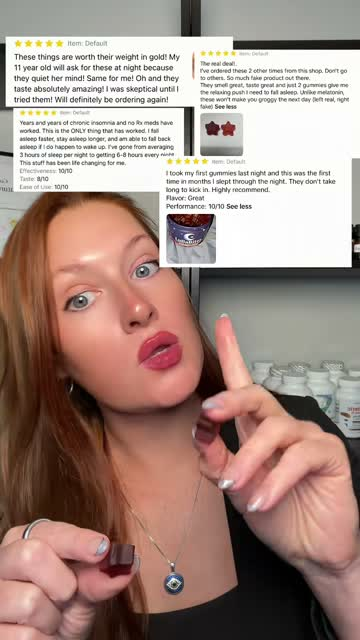
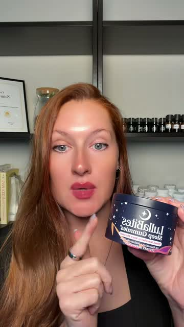
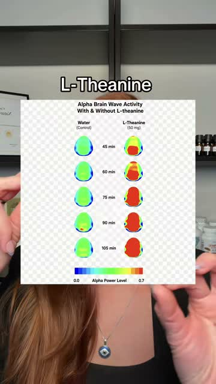
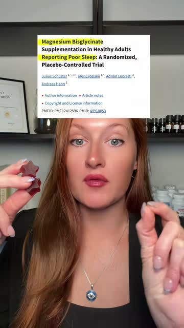
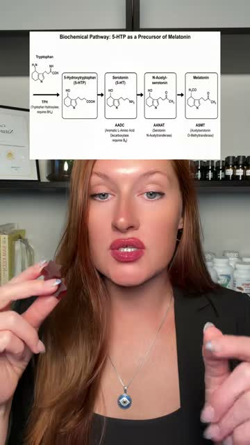

Ninety seconds. Five ingredients. The tub does not appear until seventy-eight percent of the way through, and the link lands with three seconds left. And at the very end she tells a whole group of people not to buy it, which is the part that makes everybody else buy it.
@naturopathicapothecary · sleep gummies · 1 minute 30 · one take, phone, shelf behind her

0:11Real reviews, pointed at, never read out
1:10The tub, at last"There is an internet challenge where people are taking two of these sleep gummies and trying to stay awake for an hour, but nobody can make it past thirty minutes."
She is not telling you it works. She is telling you other people are losing a game, and the only way to lose is if it works. Above her head a clip plays of a woman face down on a bed with the words thirty minutes later. Nobody has promised you a result and you already believe it.
"As a holistic wellness coach, let me explain exactly why that is happening."
It arrives at seven seconds, once the hook has already landed, and it runs six words. It is there to license the next sixty seconds of ingredient talk, and then it disappears.
Real reviews fill the screen for about two seconds. She never reads one out. Nobody can pause a TikTok fast enough to read them properly, and that is the point. Your eye registers a wall of five stars and moves on.
"First things first, there is no melatonin in these gummies, and that is actually a good thing, because this is the reason they do not leave you feeling groggy and hungover the next morning."
This is the strongest move in the whole video. Everybody watching has tried melatonin and woken up foggy. In one sentence she names the ingredient they already distrust, takes it off the table, and explains the grogginess they have all felt. The product has not been praised yet and the competition is already gone.
Every one is a name, then one plain sentence, then move. No dosage, no studies read aloud, no mg. The longest explanation in the whole video is eighteen words.

0:33Alpha brain waves, water versus l‑theanine
0:37A real trial, title highlighted in yellow
0:46Tryptophan to 5‑HTP to melatoninThree pieces of evidence appear for about two seconds each while she keeps talking. She never cites them and never explains them. They are there so your eye sees that real evidence sits behind the sentence your ear is hearing.
"After seeing that ingredient list, I knew I had to try it myself. So I took two of these last night, and that is some of the best sleep I have had in a really long time."
The easy version of this video opens here. She spends forty-five seconds earning it first, so when it arrives it reads as the conclusion of everything before it rather than the reason for it. And it is one night, last night, which is small enough to be true.
"With one caveat. If you are on an SSRI, this is probably not for you, because this has 5-HTP, and both SSRIs and 5-HTP boost serotonin."
She gives away a slice of her own audience, on purpose, seventeen seconds before the link. A person who will take money off the table is a person telling the truth, and everybody who is not on an SSRI has just been handed a reason to trust the whole video. This is the single most valuable second in it.
"I am going to drop these down below in the orange cart, and feel free to comment if you have any questions."
No urgency, no discount, no sell-out line, no code. The ask is flat and it is over in three seconds, because all the work was already done.
Almost every supplement video starts by piling on reasons to buy. This one starts by taking a reason away. No melatonin, and here is why that matters. Only once the obvious alternative is gone does she start building, and by then the woman watching has nowhere else to go.
Then she never asks to be believed. The challenge is other people. The reviews are other people. The chart and the trial are other people. All she offers of her own is one night of sleep, and she offers it last.
The honest caveat. We have never once told a woman that our product might not be for her, and it is the cheapest trust we could buy. Everything else in this video is technique. That part is character, and she gets paid for it.
No story needed for this one. This is the other format, and it works on a phone with nothing behind you but a shelf.
Not on your own problem. On what you noticed, or a question that keeps turning up, or what women keep saying in the comments under a video like this.
This is her no melatonin, and ours is better than hers.
Stay with these four and leave the rest out, because a shorter list is easier for her to hold on to.
Not before. It lands as the conclusion instead of the pitch.
The one beat nobody else on our team has used.
No urgency, no sell-out line, no code.
Never against a doctor. Being told it was normal when it was not is yours to say, and it is strong. Saying a prescription does not work, or that you stopped going, is the line that gets a video pulled.
No sell-out lines. She never says these are running low, and she did not need to.
Helps support. That is the phrase for any effect. Your own experience is yours, the viewer's body is not.
She spent eighty-three seconds making the case and three seconds asking. Everybody else does it the other way round.
Breakdown 16 · nuora creator library · for our creators only